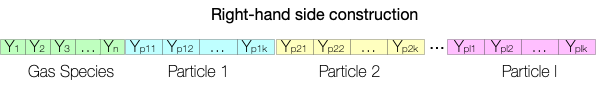

Methodology
TChem-atm computes the source term or the right-hand side of the gas-species equations:
and its associated Jacobian matrix, \(\textbf{J}_{ij} = \frac{\partial \dot{\omega}_i}{\partial \eta_j }\), which is evaluated using either finite differences (Tines library) or automatic differentiation (Sacado library). Furthermore, TChem-atm has an interface for Tines or CVODE ODE (ordinary differential equation) solver to advance the volumetric mixing ratio (vmr, \(\eta_k\) ) of gas species, \(k\), in time.
The net production rate of species \(k\), \(\dot{\omega}_k\), or the "right-hand side" of the previous equation is computed using:
where \(q_i\) is the rate of progress of reaction \(i\), \(N_{\text{react}}\) is the number of reactions and \(\nu''_{ki}\) and \(\nu'_{ki}\) are the stoichiometric coefficients for species \(k\) in reaction \(i\) for the reactant and product sides of the reaction, respectively. The rate of progress of reaction \(i\), \(q_i\), is computed as
where \(N_{\text{spec}}\) is the number of species, \({k_f}_i\) is the reaction constant of reaction \(i\). The reaction constant \({k_f}_i\) can take several functional forms depending on the reaction type. We present below the reaction types that are available in TChem-atm.
Aerosol-Gas interations
TChem-atm facilitates the construction of source terms (or RHS) for gas-aerosol cases. In these cases, the RHS is constructed as follows:

Where, the first part of the RHS corresponds to the concentration of gas species. Then, the concentration of each particle is appended. Currently, TChem-atm supports the SIMPOL mass transfer.
Reaction Types
Currently, TChem-atm can reproduce gas chemistry for two complex reaction mechanisms: the gas chemistry of \(\eee{}\) v3, i.e., the UCI chemistry system (University of California Irvine), and the Carbon Bond 2005 chemical mechanism, which is well-formulated for urban to remote tropospheric conditions (Dawson,Yarwood). To represent these mechanisms, TChem-atm implements Troe, Arrhenius, Troe-Arrhenius ratio, and Custom-H2O2 reaction types.
Next, we present the expression for the forward rate constant of the reaction types implemented in TChem-atm. In these equations, \(\mathrm{T}\), \(\mathrm{P}\), and \([M]\) correspond to the temperature, pressure, and air concentration.
Arrhenius Type
The Arrhenius type of reaction (type: ARRHENIUS) is computed by
Where, \(A\), \(B\), \(C\), and \(D\) are kinetic constants. As an example, the following reaction from the Carbon Bond 05 mechanism,
has the following information provided using the following YAML configuration:
- MUSICA_name: R3
reactants:
O3: 1
NO: 1
products:
NO2: 1
type: ARRHENIUS
coefficients:
A: 3e-12
B: 0.0
C: -1500.0
D: 0.0
Under reactants and products, the name and stoichiometric coefficient (\(\nu''_{ki}\), \(\nu'_{ki}\)) of each species is listed.
Note that in the previous reaction, \(O_2\) is not considered a product in the computation of \(k_f\).
Troe Type
The Troe type of reaction (type: TROE) is computed by
where, \(k_0\) and \(k_{\infty}\) are computed via the following Arrhenius expression.
As an example of one reaction from the Carbon Bond 05 mechanism,
The kinetic constants are provided using the following format:
- MUSICA_name: R5
reactants:
O: 1
NO2: 1
products:
NO3: 1
type: TROE
coefficients:
k0_A: 2.5e-31
k0_B: -1.8
k0_C: -0.0
kinf_A: 2.2e-11
kinf_B: -0.7
kinf_C: -0.0
Fc: 0.6
N: 1.0
We use a modified version of the Troe reaction for the UCI mechanism using the type: JPL.
For example, for the uci6 reaction in the UCI mechanism:
- coefficients:
k0_A: 6.5e-34
k0_B: 0
k0_C: 1335
Fc: 1
kinf_A: 2.7e-17
kinf_B: 0
kinf_C: 2199
type: JPL
note: uci6
adjust_reaction:
- M
id: '52'
reactants:
HNO3: 1
OH: 1
products:
NO3: 1
H2O: 1
JPL type N = 1.
Custom H2O2 type
The rate constant for the custom H2O2 type of reaction (type: CMAQ_H2O2) cannot be expressed as the combination of Arrhenius and Troe reaction types. Hence, TChem-atm has a specific convention for this reaction.
\(N_A=6.02214179 \times 10^{23}\) is Avogadro's number (\(\mathrm{mole}^{-1}\)), and \(R=8.314472\) is the universal gas constant (\(J\ \mathrm{mole}^{-1}\ K^{-1}\)).
As an example of this reaction from the Carbon Bond 05 mechanism:
- MUSICA_name: R34
reactants:
HO2: 2
products:
H2O2: 1
DUMMY: 1
type: CMAQ_H2O2
coefficients:
k1_A: 2.3e-13
k1_C: 600.0
k2_A: 1.7e-33
k2_C: 1000.0
Custom OH_HNO3
The Carbon Bond 05 mechanism employs this reaction type and can be expressed as the sum of Arrhenius and Troe reaction types, i.e., \(k_f=k_{\text{troe}} + k_{\text{arrhenius}}\). Hence, one must specify two reactions in the YAML input files. For example:
- coefficients:
A: 2.4e-14
C: 460.0
note: CMAQ_OH_HNO3
products:
NO3: 1.0
reactants:
HNO3: 1.0
OH: 1.0
type: ARRHENIUS
- coefficients:
k0_A: 6.5e-34
k0_C: 1335.0
kinf_A: 2.7e-17
kinf_C: 2199.0
Fc : 1
note: CMAQ_OH_HNO3
products:
NO3: 1.0
reactants:
HNO3: 1.0
OH: 1.0
type: TROE
Troe-Arrhenius Ratio Type
This reaction type (type: R_JPL_ARRHENIUS) is computed as the ratio between Troe (or JPL) and Arrhenius types, i.e., \(k_f=k_{\text{troe}}/k_{\text{arrhenius}}\).
The addition of this reaction type to represent UCI reactions required custom-defined rate coefficients (UCI #7-9). As an example, for the uci7 reaction:
- coefficients:
k0_A: 1.9e-31
k0_B: -3.4
Fc: 0.6
kinf_A: 4e-12
kinf_B: -0.3
A: 2.1e-27
B: 0
C: 10900.0
type: R_JPL_ARRHENIUS
note: uci7
adjust_reaction:
- M
id: '57'
reactants:
HO2NO2: 1
M: 1
products:
HO2: 1
NO2: 1
M: 1
usr_DMS_OH
The reaction type usr_DMS_OH is part of the UCI mechanism and is hard-coded in the mo_usrrxt submodule in \(\eee\)'s code. In TChem, we reformulate this reaction type as a Troe (or JPL) reaction type using the following configuration.
- coefficients:
k0_A: 3.57e-43
k0_B: 0
k0_C: 7810
Fc: 1
kinf_A: 3.0909090909090913e-12
kinf_B: 0
kinf_C: 350
type: JPL
note: usr_DMS_OH
adjust_reaction: [M, M]
id: '89'
reactants:
DMS: 1
OH: 1
products:
SO2: 0.5
HO2: 0.5
usr_SO2_OH
The reaction type usr_SO2_OH is part of the UCI mechanism and is hard-coded in the mo_usrrxt submodule in \(\eee\)'s code. In TChem, we reformulate this reaction type as a Troe (or JPL) reaction type using the following configuration.
- coefficients:
k0_A: 3e-31
k0_B: -3.3
k0_C: 0
Fc: 0.6
N: 1.0
kinf_A: 1.5e-12
kinf_B: 0
kinf_C: 0
type: JPL
note: usr_SO2_OH
adjust_reaction: [M, M]
id: '90'
reactants:
SO2: 1
OH: 1
products:
H2SO4: 1
Modifier prod O1D
Reaction types UCI 1, 2, 3 in the UCI mechanism require a modifier to compute the reaction rate. We did not include this modifier under the reaction section of the input file; instead, we created the section modifier_prod_O1D.
where, \(f_c\)
The YAML configuration for this modifier is :
modifier_prod_O1D:
coefficients:
A1: 2.15e-11
C1: 110.0
A2: 3.3e-11
C2: 55.0
A3: 1.63e-10
C3: 60.0
species_name_1: N2
species_name_2: O2
species_name_3: H2O
reaction_list:
- 22
- 23
- 24
photolysis_reaction_index: 0
coefficients, the kinetic parameters are presented.
The species involved in this factor are listed as species_name_1 and species_name_2.
Note that TChem will find the index of the proper corresponding species.
The reaction_list gives the index of the reactions for which this modifier is applied. Finally, photolysis_reaction_index is the index of the \(\mathrm{prod_{O1D}}\) reaction.
Future work will convert reaction_list from a list of indices to reaction IDs, as will photolysis_reaction_index. Thus, one does not need to know the index of each reaction before running a TChem simulation.
Gas-Aerosol Reaction Types
SIMPOL mass transfer
It calculates the evaporation rate of organic species that partition between the gas and aerosol phase, based on the parameterization by Pankow and Asher (2008).
TChem-atm utilizes a YAML file and follows to the CAMP format to specify SIMPOL types.